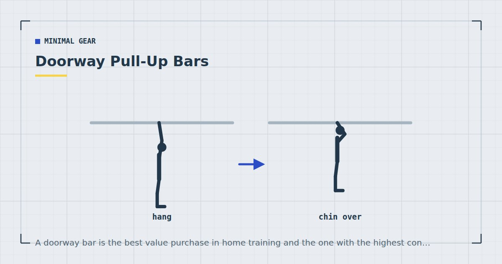

Minimal Gear
Doorway Pull-Up Bars: Safety, Fit and Wall Damage
A doorway bar is the best value purchase in home training and the one with the highest consequence of getting wrong. The failure mode is falling from height.

Pulling is the one movement pattern bodyweight training cannot supply on its own, and a doorway bar is the cheapest complete solution to it. It is also the piece of home equipment where a mistake means falling from head height onto a hard floor.
So this guide leads with the safety rather than burying it.
The three types
Leverage mount. The common type. Sits over the door frame with padded contact points, held by your own weight through a lever action. No drilling. This is what most people buy and what most of this guide is about.
Telescopic pressure bar. Expands to wedge inside the frame by friction alone. Cheaper and considerably less safe for pull-ups — friction fittings can slip, and there is no mechanical backup. Adequate for hanging bands from; not something to hang your bodyweight from.
Screw-mounted. Fixed to the wall or frame with screws into structural timber. By far the safest and the strongest, and it leaves permanent holes. If you own your home and have a suitable wall, this is the right choice.
Telescopic pressure-fit bars rely on friction against the door frame's inner faces. There is no mechanical engagement and no redundancy: if the frame flexes, if the surface is painted gloss, or if the bar is knocked, it can release. Do not use one for pull-ups. Several injuries reported with home pull-up bars involve this type.
How leverage-mount bars actually work
Worth understanding, because it explains every fitting rule that follows.
The bar has a hook portion that sits over the top of the door frame on the far side, and a padded arm that presses against the wall above the doorway on your side. When you hang from it, your weight rotates the assembly, pressing the pad harder into the wall and the hook harder onto the frame. The heavier you are, the more firmly it grips.
Two consequences follow. First, the bar is only safe when loaded downward — the moment you push up or forward, the lever action reverses and the grip releases. This is why kipping, swinging, and anything explosive is unsafe on a leverage bar. Second, all your weight is being transmitted into the wall above the doorway through a small pad, which is where the damage question comes from.
Which door frames are safe
Suitable: a solid timber frame, securely fixed, with a flat wall surface above the opening on the side you hang from. Frame width typically between 60 and 90 centimetres, and the moulding no more than about 8 centimetres deep.
Not suitable:
- Frames with deep or ornate architrave. The hook cannot seat flat, so it bears on an edge.
- Plasterboard-only reveals with no timber behind. The pad crushes the board.
- Metal or uPVC frames. Usually hollow and not designed for this.
- Frames that move when you push the top corner firmly. Any flex means it is not securely fixed.
- Openings wider than the bar's rated span, even by a little.
- Sliding or bifold door openings, which frequently have no proper frame at all.
The test: before fitting, push firmly upward and outward on the top corners of the frame. If you feel any movement or hear creaking, use a different doorway. Then, once fitted, hang with your feet still on the floor and gradually load it before committing your full weight. Do this every time you refit it, not just the first time.
Fitting it properly
Follow the manufacturer's instructions, and beyond those:
Check the rated capacity against your bodyweight with a genuine margin, not a marginal one. If you weigh 95 kilos and the bar is rated to 100, choose a different bar.
Seat the hook fully over the frame so it sits flat rather than perched on an edge.
Ensure the pad sits on flat wall, not on a picture rail, coving or the edge of the architrave.
Refit it deliberately each session if you take it down, and repeat the load test. A bar that was safe last week can be seated differently today.
Nothing below. Clear the floor under and behind you. If the bar releases, you land where you are standing.
Avoiding wall damage
The most common complaint after safety, and largely preventable.
Damage comes from the pad concentrating your entire bodyweight into a few square centimetres of wall. On plasterboard, that dents and eventually crushes. On plaster over masonry, it marks and can crack the skim.
Fixes that work: a piece of plywood or hardboard about 20 by 30 centimetres behind the pads, which spreads the load across a much larger area. A folded towel over that reduces marking further and also quietens the creak, which matters if you live above someone — see quiet home workouts.
If you rent, the plywood-and-towel approach is worth doing from day one rather than after the first dent. It is also worth checking your tenancy terms, since some prohibit fixings and a crushed plasterboard reveal is a deposit matter even without screws.
Warning signs
Stop using the bar and reassess if you notice any of these:
- Creaking that increases over sessions rather than staying constant.
- Any visible movement of the bar under load.
- Cracking, denting or bulging in the wall above the doorway.
- The frame itself moving, or gaps opening between frame and wall.
- Deformation of the bar, or pads that have compressed flat.
- Bolts loosening between sessions.
None of these are things to monitor and continue through. A doorway bar that is beginning to fail gives warning, and the warning is worth acting on.
The bar grips because you are pulling down. The moment you push up, it lets go. That single fact governs everything you can safely do on one.
Is it worth it?
For most people, yes, and it is the purchase I would make first. Pulling is the one pattern bodyweight training genuinely cannot cover, and a bar unlocks both rows and eventually pull-ups — the progression is in how to do your first pull-up at home.
Where it is not worth it: if no doorway in your home passes the tests above, if you rent somewhere with strict terms and no way to protect the wall, or if the openings are all uPVC. In those cases resistance bands anchored in a door hinge cover the same pattern with none of the risk, and cost less — see the resistance bands guide and rows at home.
Either way, do not let the absence of a bar mean you skip pulling. A programme heavy in pressing and light in rowing is the most common imbalance in home training, and the back is unambiguously one of the major muscle groups adult activity guidance asks you to train.1
Where to go next
For the free alternatives, see rows at home. For where a bar sits in a wider equipment plan, see the minimalist home gym guide.
Frequently asked questions
Are doorway pull-up bars safe?
Leverage-mount bars are safe on a suitable frame, fitted correctly and loaded downward only. Telescopic pressure-fit bars rely on friction alone with no mechanical engagement and should not be used for pull-ups.
Will a pull-up bar damage my door frame?
The frame usually survives; the wall above the doorway is what suffers, because the pad concentrates your bodyweight into a few square centimetres. A piece of plywood behind the pads spreads the load and prevents almost all of it.
What door frames are not suitable for a pull-up bar?
Frames with deep or ornate architrave, plasterboard reveals with no timber behind, metal or uPVC frames, any frame that moves when you push the top corner firmly, and openings wider than the bar’s rated span.
How do I test if a pull-up bar is safe before using it?
Push firmly upward and outward on the top corners of the frame before fitting — any movement or creaking means use a different doorway. Once fitted, hang with your feet still on the floor and load it gradually before committing your weight. Repeat every time you refit it.
Can you do kipping pull-ups on a doorway bar?
No. Leverage-mount bars grip because your downward weight rotates the assembly into the wall and frame. Any upward or forward force reverses that action and can release the bar.
What can I use instead of a doorway pull-up bar?
Resistance bands anchored in a door hinge cover rows, pulldowns and face pulls with none of the risk. Inverted rows under a sturdy table are the best free alternative.
Sources and further reading
- World Health Organization. WHO Guidelines on Physical Activity and Sedentary Behaviour. 2020.
- NHS. Strength and Flex exercise plan.
- NHS. Physical activity guidelines for adults aged 19 to 64.
- MedlinePlus, U.S. National Library of Medicine. Exercise and Physical Fitness.
Comments
Comments are not enabled yet. Add a hosted comment embed (Disqus, Commento, Giscus) inside this container when you are ready.